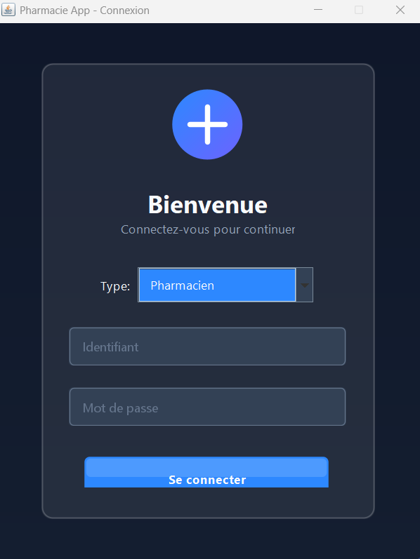
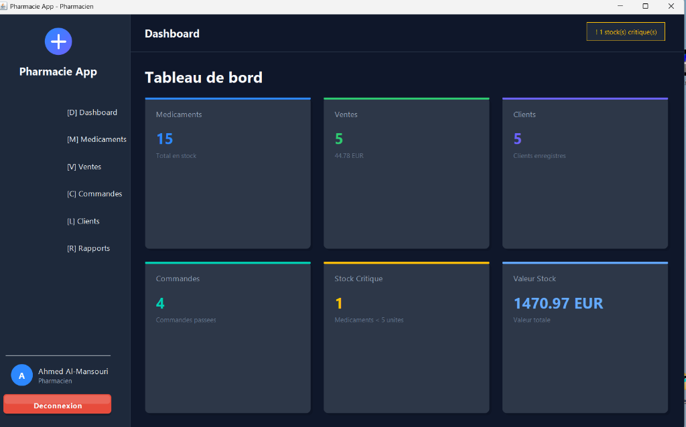

Ce document présente l'état d'avancement et les fonctionnalités de l'application "Gestion de Pharmacie". Développée en Java avec l'API Swing, cette solution vise à moderniser la gestion quotidienne d'une officine (stocks, ventes, utilisateurs).
L'accent a été mis sur une interface utilisateur (UI) moderne, ergonomique et visuellement agréable, utilisant un thème sombre ("Dark Mode") pour le confort visuel.
L'accès à l'application est sécurisé par un écran de connexion distinguant les rôles (Pharmacien vs Gestionnaire). Le design intègre un logo vectoriel personnalisé représentant le Bol d'Hygie.

Le tableau de bord centralise les informations critiques. Il permet une visualisation rapide des indicateurs de performance (KPIs) : stock total, alertes de stock critique, chiffre d'affaires et fréquentation.

L'application repose sur une architecture robuste. Voici une analyse du composant d'interface principal.
La classe Client représente l'entité cliente dans le système. Voici la structure de base
(champs et constructeurs).
import java.sql.*;
import java.util.Vector;
public class Client {
private int id_client;
private String nom;
private String prenom;
private String email;
private String adresse;
public Client() {
}
public Client(int id_client, String nom, String prenom, String email, String adresse) {
this.id_client = id_client;
this.nom = nom;
this.prenom = prenom;
this.email = email;
this.adresse = adresse;
}
public int getId_client() { return id_client; }
public String getNom() { return nom; }
public String getPrenom() { return prenom; }
public String getEmail() { return email; }
public String getAdresse() { return adresse; }
public void setId_client(int id) { this.id_client = id; }
public void setNom(String nom) { this.nom = nom; }
public void setPrenom(String prenom) { this.prenom = prenom; }
public void setEmail(String email) { this.email = email; }
public void setAdresse(String adresse) { this.adresse = adresse; }Pour garantir la fluidité de l'interface (responsive UI), les opérations lourdes comme la connexion à la
base de données sont effectuées dans un thread séparé via SwingWorker.
La gestion de la base de données est centralisée. Pour des raisons de sécurité dans ce rapport, le mot de passe est masqué.
public class DBConnection {
private static final String URL = "jdbc:mysql://localhost:3306/gestion_pharmacie";
private static final String USER = "root";
private static final String PASSWORD = ""; // Mot de passe vide par sécurité
public static Connection getConnection() throws SQLException {
try {
Class.forName("com.mysql.cj.jdbc.Driver");
} catch (ClassNotFoundException e) {
throw new SQLException("Driver MySQL non chargé", e);
}
return DriverManager.getConnection(URL, USER, PASSWORD);
}
}Le projet présente une base solide et fonctionnelle. L'interface est propre, le code est structuré et les fonctionnalités principales sont opérationnelles. Les prochaines itérations se concentreront sur l'enrichissement des fonctionnalités de reporting et l'optimisation des flux de vente.